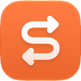
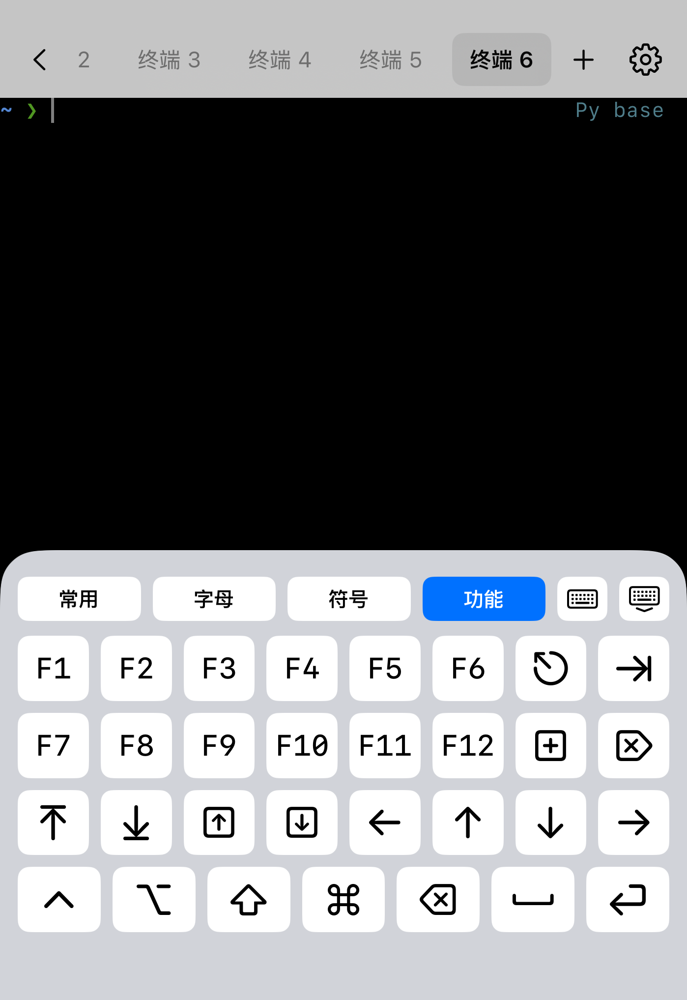

A keyboard made for the terminal.
Switch tabs and hold to rename them. Dedicated shortcut pages keep key combinations, symbols and navigation within reach.

SwiftRustBuilt on RustDesk. Refined for iOS.
SOCKS5 / HTTPS proxies. Tailscale built in.


New Trackpad and New Direct Touch modes.
Original RustDesk gestures, still here.

Added alongside the original RustDesk gestures: move with one finger, scroll with two, and hold to drag. The original Mouse and Direct Touch gestures are preserved.
Desktops, terminals and files.
A native interface for each kind of connection.
Keep sessions in tabs, with letters, symbols, function keys and everyday shortcuts close at hand.
Captured on iPhone Duo · Native terminal
Open multiple SwiftRust windows to the same computer, then choose a different monitor in each. Keep terminal and file sessions in their own windows, too.
Captured on Duo · Window count and layout depend on iOSUpload files to your computer. Download files and folders to your phone. Select in batches to download or delete, then share and organize local copies in Downloads.
Captured on Duo · File transfer
All workspace images are real Duo screenshots. The captured app interface is in Chinese.
Switch tabs and hold to rename them. Dedicated shortcut pages keep key combinations, symbols and navigation within reach.
Put different monitors in separate windows, or keep desktop, terminal and file sessions side by side. Add windows from the app icon menu and switch between them in the app switcher.
Rebuilt with SwiftUI and UIKit, using SF Symbols, dark mode and a choice of app icons.
Native interfaces for remote desktops, terminals and file management.
New Trackpad and New Direct Touch modes join the original RustDesk Mouse and Direct Touch gestures.
Adjust pointer size, movement and scrolling separately. The pointer stays the same size as you zoom, and the canvas can be locked.
Configure SOCKS5 / HTTPS proxies with a host or IP and port, an on/off switch and latency checks. Built-in Tailscale supports browser authorization and auth keys.
Reach your tailnet inside the app without a system-wide VPN. The remote device needs Tailscale and RustDesk, with direct IP access and the required permissions enabled.
Home Screen device shortcuts, full-screen QR scanning and swiftrust:// links put familiar connections within reach.
Export a Shortcuts template, then follow the system steps to add it to your Home Screen with a custom icon.
Set launch-time session restoration and foreground reconnection separately. Keep the original session type: desktop, terminal or files.
Healthy connections stay connected. Set a background wait time; actual runtime is limited by iOS.
Choose a remote resolution and check Codec, Chroma, FPS, Speed and Delay in a compact statistics panel.
Remote desktop and decoded frame dimensions are shown separately.
SwiftRust is an independent fork using the RustDesk connection core, continuing its open-source foundation under AGPL-3.0.